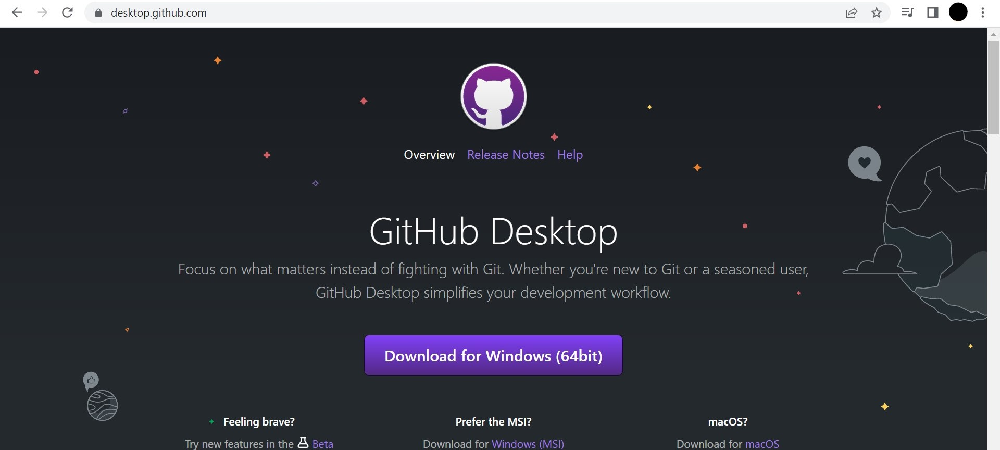

How to Create Your Own Web Page In GitHub Desktop
- Create a directory on your local hard drive and add all your website files
- From Git Bash create a new directory to contain all your website files. We'll name it "porfolio" for this tutorial but you can name it anyname you like.
$mkdir
- Go to to the newly created directory.
$cd portfolio
- In the portfolio directory, create a new file "index.html" using the $touch command or any other editor. This will be the main page of your wesite.
-Create a new directory inside the porfolio directory to contain all images that will be used on your website.
$mkdir images
- Place your profile pictre in your newly created images directory.
- Create a local repository on your hard drive using command line.
- Open Git Bash and go to the "portfolio" directory that you've created in step 1.
- Create a new repository using git init.
$ git init
- List all the files and directories on your portfolio directory and make sure it has the html file and images directory you've added in step 1.
$ -ls
- the files to you repository one at a time.
$ git add index.html
$ git add images/profile-picture.jpg
- Commit your last changes to the repository.
$ git commit -m "Add index.html file and profile picture."
- Download and install GitHub desktop
- Go to https://desktop.github.com/ and click the button of the system that you're working on to dowload GitHub desktop installer.
- Once you've downloaded your installer open it and follow the instructions selecting all the default options.

- Create an account
- Open GitHub desktop by double clicking the icon on your desktop.
- You'll have the option to sign in or sign up for a new account.
- Click on n sign up to create a GitHub account, it will give you a link to https://github.com where you can create your new account.
- Go back to your GitHub desktop and sign in using the user ID and password you've just created.